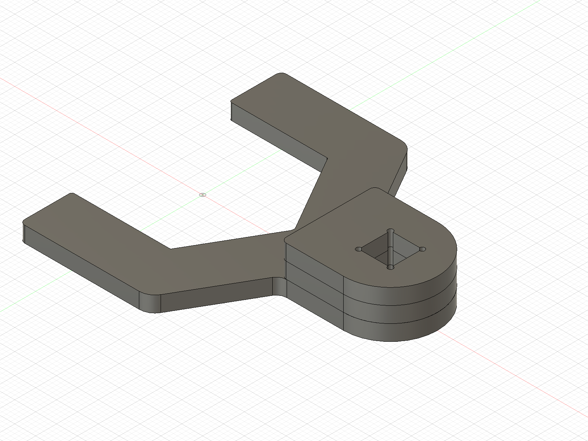

Crow's foot · Design B · r1B
Design A is the single laser-cut plate. Design B adds two 3/8 in AR400 doublers stacked at the drive end (shown in orange). Turn each one, look edge-on, zoom in.
Interactive 3D
Drag to orbit, scroll or pinch to zoom. Switch between the two designs below.
Drag to rotate · scroll / pinch to zoom · double-click to recenter

DNK Fabrication — Dylan Hinesly · dylan@dnkfabrication.com · Lubbock, TX
Design and model © DNK Fabrication. Shown for review; not for reproduction.